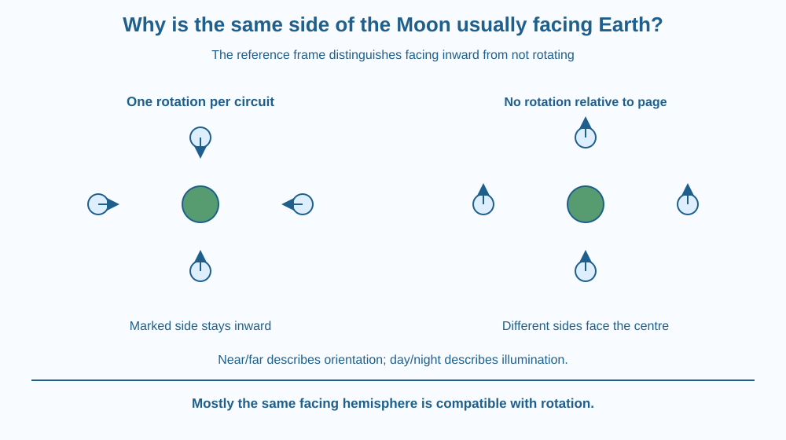

Explain synchronous rotation by relating spin to travel around Earth. Distinguish a Moon that does not rotate from one that turns once during each circuit. Recognise why seeing mostly the same hemisphere is compatible with rotation, while keeping the phase cycle as a separate question.
Imagine looking at the Moon over many nights. Recognisable large features remain on roughly the same Earth-facing hemisphere. It is tempting to say the Moon must not rotate at all.
Now picture walking around a friend while keeping your face toward them. Relative to the room, your facing direction changes continuously. By the time you finish one circuit, your body has turned through a full rotation.
The Moon's arrangement is similar in an important geometric sense. Keeping a side directed inward during a circuit requires rotation relative to a distant reference.
Rotation is turning about an object's own axis. Revolution here means travelling around another body. These are distinct motions, and their periods can be compared using an external reference such as distant stars.
The Moon's spin period is approximately matched to its period of travel around Earth relative to that external reference. This is called synchronous rotation. It produces a situation in which broadly the same hemisphere faces Earth.
To see why, mark an inward-facing arrow on a model Moon. At the left of Earth, the arrow must point right. At the top, it must point down. At the right, it must point left. At the bottom, it must point up.
The arrow has turned through a full set of directions during one circuit. A Moon that did not rotate relative to the room would keep its arrow pointing the same way throughout the circuit. An observer at the centre would then see different sides as it moved around.
The distinction depends on the reference frame. Saying “it does not turn relative to Earth” can describe the roughly fixed facing relationship, but saying “it does not rotate at all” loses the external-frame motion. Scientific descriptions should name the viewpoint.
This topic is also different from Moon phases. A hemisphere can remain broadly Earth-facing while different fractions of it receive sunlight visible to us. Rotation matching explains the facing relationship; Sun-Earth-Moon illumination geometry explains the bright appearance.
The facing is not perfectly rigid in every viewing detail. Small changes in orientation and viewing geometry, called libration, allow us to glimpse beyond the edges over time. Therefore “exactly the same half is visible at every moment” is too strong.
The far side is not permanently dark. It receives sunlight during part of the cycle just as the near side does. Near and far describe orientation relative to Earth; day and night describe illumination. We do not repeat the gravitational origin of the motion or orbital stability in this geometric lesson.
Put a central circle on a page and move a small square around it. Mark one edge of the square with an arrow. In the first trial, keep that arrow pointing toward the centre.
In the second, keep the arrow pointing toward the same wall or page edge. Compare what the central observer sees. The first trial requires the square to rotate relative to the page; the second does not, but different edges face the centre.
Record both the facing direction and position at four points. A table prevents the model from relying on a vague hand motion. The one-turn-per-circuit relationship becomes visible in the sequence of arrow directions.
The SVG shows four Moon positions around Earth. A marked near-side arrow points inward at each position. A separate row lists its direction relative to the page: right, down, left and up.
A comparison shows a nonrotating marker pointing the same external direction at every position. The central observer would not see the same marked edge throughout that second circuit.
The diagram contains no light and shadow shading because its purpose is orientation, not phases. It is not to scale and does not depict forces, the history of tidal locking or the detailed amplitude of real libration.

Spacecraft images of the Moon's far side reveal terrain that Earth-based observers cannot see directly in the usual facing geometry. Far side is the useful term; dark side incorrectly suggests an illumination rule.
ISRO missions and other lunar observations use maps that distinguish locations and viewing perspectives. Understanding the reference frame helps a student interpret a globe, spacecraft image or animation without assuming every spinning view is what an Earth observer would see.
The same general matching idea can occur in other celestial systems, but today's model makes no numerical claim about every moon or planet. Its focus is the relationship between two periods and a facing direction.
Use a coin or paper square with an arrow drawn on a separate scrap, plus a central circle on paper. No walking in circles or dark room is needed.
Define the page as your distant-reference frame. Without that definition, the words turning and not turning can become ambiguous. The model does not reproduce changing illumination, gravity or exact lunar timing.
Why is the far side not the same as the night side? Use separate labels for Earth-facing orientation and Sun-facing illumination.
Now suppose a model spins twice during one circuit instead of once. Would its marked side stay directed toward the centre? Follow the arrow at intermediate positions rather than assuming that returning to the starting direction at the end is sufficient.
What is synchronous rotation in this Moon model?
Answer: B — Matching the spin and circuit periods keeps broadly one hemisphere directed inward.
Why does an inward-facing arrow turn relative to the page during a circuit?
Answer: C — Staying directed toward the centre requires changing orientation in the external frame.
Does far side mean a hemisphere that never receives sunlight?
Answer: A — Far side describes the Earth-facing relationship, while sunlight changes during the cycle.
Create a correction to the claim “We see mostly one lunar hemisphere because the Moon never rotates.” Use four positions and a marked side.
Then draw the counterexample: a model with no rotation relative to the page. Explain what the central observer sees in that case. Include one sentence separating synchronous rotation from phases so the correction does not replace one misconception with a different one about sunlight.
Keeping the same side pointed inward can require turning continuously. The apparent contradiction arises because one statement uses the central observer as reference and the other uses the wider room. Naming the reference frame turns a confusing claim into a simple geometric relationship.
The Moon turns roughly once per circuit around Earth, so mostly the same hemisphere faces us; this matching differs from the changing sunlight pattern of phases.